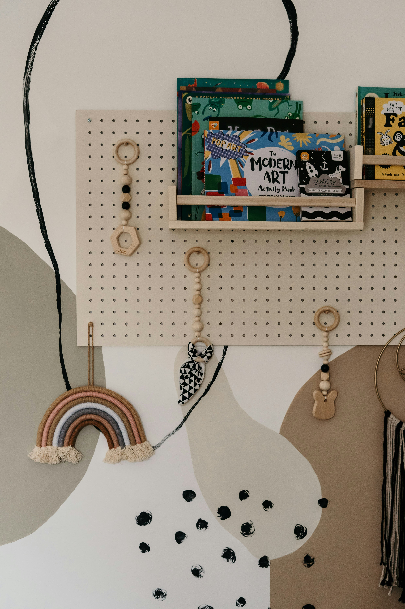

Setting up a nursery is exciting — but it can also be surprisingly energy-intensive. Night lights, baby monitors, sound machines, fans, bottle warmers, and air purifiers — the list of electrical gadgets marketed to new parents keeps growing. Here's how to create a beautiful, functional nursery that runs on as little electricity as possible, saves you money every month, reduces electromagnetic field (EMF) exposure for your sleeping baby, and treads lightly on the planet.
"A solar-powered nursery isn't just better for the planet — it's better for your baby's health and your household budget."
Why energy efficiency matters in the nursery
The nursery is often the most energy-intensive room in a new parent's home. Night lights run all night. Baby monitors operate continuously. Sound machines play 24 hours a day. Over the first year of your baby's life, these devices can add $100-$300 to your electricity bill — and that's before considering the environmental cost of the electricity generation.
There's also an emerging body of research suggesting that electromagnetic field (EMF) exposure from wifi devices and electrical equipment placed close to sleeping babies may warrant precautionary minimisation. While the science is not conclusive, many parents prefer to reduce EMF exposure where practical and easy to do so.
Solar night lights

Nursery night lights are typically on for 10-12 hours every night — that's significant energy consumption over weeks and months. Solar-powered night lights charge during the day on a windowsill and run through the night for free — zero electricity cost, zero cords near baby's sleep space.
Look for night lights with a warm amber glow rather than a cool white or blue-toned light. Cooler light wavelengths suppress melatonin production, disrupting both your baby's and your own sleep hormone cycles. Amber, orange, or red-toned light has the least impact on melatonin and is the ideal colour for nighttime.
Good solar night light options to look for include those with a light sensor that automatically turns on at dusk and off at dawn, eliminating the need to remember to switch them on and off.
Solar Powered Night Light
Charges on a sunny windowsill during the day and glows softly through the night — completely free to run. Warm amber light that supports healthy melatonin production for both baby and mama.
View on Amazon → As an Amazon Associate we earn from qualifying purchases at no extra cost to you.Low-EMF baby monitors
Conventional wifi baby monitors emit continuous radiofrequency radiation at relatively high levels — and they're typically placed just centimetres from your sleeping baby's head, operating throughout all their sleeping hours. For parents who want to minimise EMF exposure, there are several effective alternatives:
- DECT baby monitors — these use the DECT (Digital Enhanced Cordless Telecommunications) standard and, crucially, many models only transmit when sound is detected rather than continuously. Look for models with an "eco mode" or "low radiation" setting.
- Wired video monitors — these use a physical ethernet or USB cable connection between the camera and the parent unit, completely eliminating wifi radiation. They're less convenient than wireless options but provide excellent video quality with zero EMF.
- Audio-only monitors — simpler and cheaper than video monitors, and lower in EMF output. Many parents find they don't actually need to see their baby and that audio is sufficient.
Energy-efficient white noise machines
White noise machines are genuinely helpful for baby sleep — they mask household sounds, create a consistent sleep cue, and replicate the whooshing sounds of the womb. But they run all night, every night, for months or years. Choosing an energy-efficient model makes a meaningful difference over time.
Look for models with a low-power mode, a sleep timer, or a sound-activated mode that only operates when the baby makes noise. Alternatively, a simple USB-powered desk fan achieves both white noise and airflow — which is important for safe sleep, as the American Academy of Pediatrics recommends a fan in the room to reduce SIDS risk — at very low energy consumption.
Rechargeable AA Batteries + Smart Charger
A quality set of rechargeable AA and AAA batteries with a smart charger pays for itself within weeks. Eliminates the ongoing cost and waste of disposable batteries for all your baby gear.
View on Amazon → As an Amazon Associate we earn from qualifying purchases at no extra cost to you.Solar-powered outdoor and decorative products
If you have a garden, balcony, or outdoor space, solar-powered products are an excellent addition to your baby's world:
- Solar fairy lights — beautiful ambient lighting for outdoor tummy time and play spaces, completely free to run
- Solar garden lights — safe, automatic pathway and garden lighting
- Solar-powered water features — the gentle sound of running water is wonderful white noise for outdoor naps
Inside the nursery, solar fairy lights placed on a south-facing windowsill charge during the day and create a magical, cord-free glow in the evening. They're particularly lovely during winter months when natural daylight is limited.
Rechargeable baby gear
Many battery-powered baby products — bouncy chairs, swings, mobiles, sleep soothers, and toys — go through batteries at a remarkable rate. A swing running on AA batteries can consume 4-8 batteries per week. Over the first year, this adds up to hundreds of batteries and significant cost.
Switching to rechargeable batteries (or purchasing rechargeable-via-USB versions of these products) reduces both ongoing cost and waste dramatically. A quality set of rechargeable AA and AAA batteries with a smart charger costs around $30-$50 and pays for itself within weeks. Look for baby products that charge via USB when purchasing new items — this is increasingly common and extremely convenient.
LED lighting throughout the nursery
If you haven't already switched to LED bulbs throughout your home, the nursery is an excellent place to start. LED bulbs use up to 90% less electricity than incandescent bulbs and last 15,000-25,000 hours — compared to 1,000-2,000 hours for incandescent bulbs. The upfront cost is slightly higher, but the lifetime cost is dramatically lower.
For the nursery, choose bulbs with a warm colour temperature of 2700K-3000K. This produces a cosy, soft light that's gentle on developing eyes and supports healthy circadian rhythms. Avoid cool white or daylight bulbs (5000K-6500K) in the nursery — they're energising rather than calming and will work against your sleep goals.
Warm White LED Bulbs for Nursery
Energy-efficient warm white LED bulbs (2700K) use 90% less electricity than incandescent bulbs and last up to 25,000 hours. The perfect cosy, calming light for a nursery.
View on Amazon → As an Amazon Associate we earn from qualifying purchases at no extra cost to you.The bigger picture — a solar home
For families who want to go further, rooftop solar panels are the ultimate nursery energy solution — and indeed, for the whole home. The cost of residential solar has dropped by over 70% in the past decade, and many households find their systems pay for themselves within 5-8 years through electricity savings. Government incentives and solar financing options have made solar more accessible than ever.
Even without rooftop solar, the cumulative impact of the smaller changes described in this article is significant. Every kilowatt-hour of electricity you save is one less unit of fossil fuel burned — and over the years your child spends in the nursery, these small savings add up to a meaningful contribution to both your budget and the planet they will inherit.
Calculating your actual savings
It can be helpful to calculate the concrete savings available from solar nursery products to understand the real financial case. Here's a rough breakdown of annual electricity savings from a complete solar nursery setup:
- Solar night light running 10 hours per night: saves approximately $15-25 per year compared to a standard plug-in night light
- Solar window fan running 8 hours per day: saves approximately $50-80 per year compared to a standard electric fan
- Rechargeable batteries for baby gear: saves approximately $50-100 per year compared to disposable batteries
- LED bulbs throughout nursery: saves approximately $30-50 per year compared to incandescent bulbs
Total annual savings from a solar nursery setup: approximately $145-255 per year. Over five years — roughly the period your child will use the nursery — that's $725-$1,275 in electricity savings from an upfront investment of $100-$200 in solar products. The return on investment is extraordinary.
Solar nursery products and baby safety
Parents understandably have questions about the safety of solar products in a nursery environment. The good news is that solar-powered nursery products are generally safer than their conventional counterparts in several important ways.
Solar night lights eliminate the risk of overheating associated with some plug-in night lights and remove electrical cords from the nursery environment — cords pose a strangulation risk as babies become mobile. Solar fairy lights are low-voltage and cool to the touch, eliminating the burn risk associated with conventional fairy lights. Rechargeable batteries, while still requiring safe storage away from babies, reduce the frequency of battery changes and the associated risk of babies accessing loose batteries.
When purchasing solar nursery products, always check that they meet relevant safety standards for your country and are designed for use in environments with infants and young children.
Get your free personalized plan
Complete pregnancy guide including a solar nursery setup guide — free, no sign-up required.
Create my free plan →